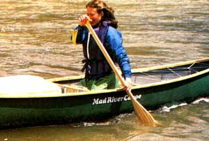
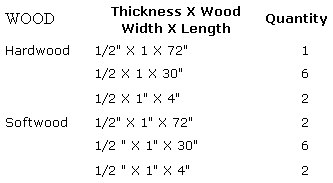
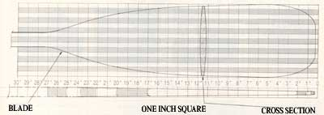
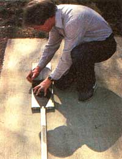
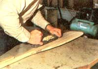
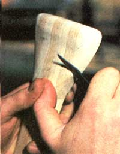
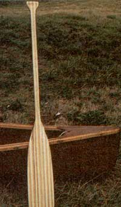

For centuries, the canoe has been an economical, reliable, and swift means of transportation and recreation. Many enthusiasts attribute this long history of service not only to the small boat's durable design but also to its simple method of propulsion: the paddle.
Not just any paddle, however, will do the job. To generate maximum performance and enjoyment, it must be strong, lightweight, and properly fitted to the individual canoeist. Unfortunately, many mass-produced versions lack the surface area necessary for power. They break under stress, and they aren't nearly as comfortable to use as a customized paddle that conforms perfectly to an individual's height and grip.
You can solve these problems by making a quality, personalized paddle. For materials, you'll need only one 1/2-by-6-by-72 inches board of hardwood (such as oak, ash, walnut, or hickory) and one 1/2-by-6-by-72 inches board of softwood (such as poplar, redwood, or Sitka spruce - don't use yellow pine). Almost any lumberyard stocks these woods.
To begin construction, use a band or table saw to cut your two boards into the sizes in the chart in the Image Gallery.
Now, starting with the 1/2-by-1-by-72-inch strip of hardwood at the center, lay the pieces of wood side by side, alternating hardwood and softwood, and on edge, so that the 1-inch width serves as the paddle's thickness. The three 72-inch strips will extend the entire length of the paddle; they'll become the shaft and form the center of both the blade and the grip. The 30-inch strips at the bottom, on either side of the three center strips, will form the rest of the blade, and the 4-inch pieces will make up the grip.
Before you actually position the shortest pieces, however, you must find the correct location for the handle in relation to your height. While standing, measure the distance from your chin or shoulders to the floor. This measurement is approximately the right paddle length for you. If, however, you prefer a longer or shorter paddle (whether you sit or kneel in the canoe can make a difference, for example), feel free to adjust the length accordingly.
Once you've established the total height of the paddle, subtract 27 inches (the length of the finished blade) and measure the remaining distance up from the blade's throat (which is where the shaft meets the blade). At this mark, cut the three strips making up the shaft. Now, to complete the assembly, lay out the strips for the grip, remembering to alternate the different woods.
Before you begin to glue the pieces together, you'll need to find or borrow two clamps for the grip, four for the shaft, and at least three for the blade. The widemouthed style will work perfectly on the blade, while the C-type will hold the other areas. Next, using an ample amount of glue, laminate the strips together and attach the clamps very tightly. When laminating the strips, I've gotten the best results with a waterproof resorcinol adhesive, but it is also the most difficult to use. A phenolic resin glue or an aliphatic glue is a little easier to work with and will also provide excellent strength and adherence.
Allow the assembly to dry for a day, and use the time to transfer the blade and grip patterns shown here onto stiff paper, so you can begin the final shaping. Start by tracing the outline of the design onto the laminated wood, being careful to follow the pattern closely. Next, trim off the excess wood with a coping, saber, or band saw. Since it cuts a fast and smooth line, I prefer the band saw. A coping saw, however, will allow you to cut with more precision.
A power sander, spokeshave, rasp, or - if you're strong - a drawknife will handle the rough-shaping of the blade. To accomplish this, first cut the blade's tip down to about 1/2 an inch and then - starting at the throat and finishing at the bottom - evenly taper the wood thickness from 7/8-inch at the throat to at least 3/8-inch at the tip. With that done, taper the blade from its longitudinal centerline to its outer edges, which should end up being 1/4-inch thick. Be sure that you check the wood's depth frequently as you work, or you might carve away too much wood - which will cause the paddle to lack stiffness and perhaps, as a result, to break.
Once the blade is completed, move on to the shaft and grip. These areas can be shaped to your own personal taste and feel. Use a pocketknife to whittle the grip, and give both sides of the handle a slightly concave center to fit your fingers and palm. In addition, if you have large (or small) hands, add (or subtract) 1/4-inch to (or from) the standard 1 1/4-inch width of the shaft.
The final sanding will rid the wood of any high spots; begin with medium-grit paper and finish with fine-grit. For professional results, feel the paddle's surface often while you're sanding, and concentrate your efforts on any trouble areas. When the shape looks and feels right, give the wood one last going over with a very fine-grit sandpaper.
At this point, you'll probably be ready to give yourself a hearty pat on the back, but there's still one last step. The paddle will need a few coats of exterior polyurethane or marine-grade spar varnish to preserve its inherent beauty. I use a thinned varnish for a sealer coat and then apply two or three additional coats for extra protection, sanding lightly before each application.
Now your paddle is complete, and while you might be content for the moment just to sit there and admire your handiwork, the fun is really just beginning. You'll find that out the first time you glide across a lake or down a peaceful river with your own made-to-perfection paddle!
|
 MOTHER EARTH NEWS STAFF This sturdy, beautiful paddle is a joy to use! |
 MOTHER EARTH NEWS STAFF To begin construction, use a band or table saw to cut your two boards into the sizes in the chart above. |
 MOTHER EARTH NEWS STAFF Measurement guide for construction of the paddle. |
|
 MOTHER EARTH NEWS STAFF First, draw your pattern on the glued-together wood strips. |
 MOTHER EARTH NEWS STAFF Taper the blade's thickness from 7/8-inch at the throat to at least 3/8-inch atthe tip of the paddle. |
 MOTHER EARTH NEWS STAFF Shape the grip so that it fits your personal taste and feel. |
|
 MOTHER EARTH NEWS STAFF Once the completed paddle is sanded and finished, it resembles a work of art. |
|
|